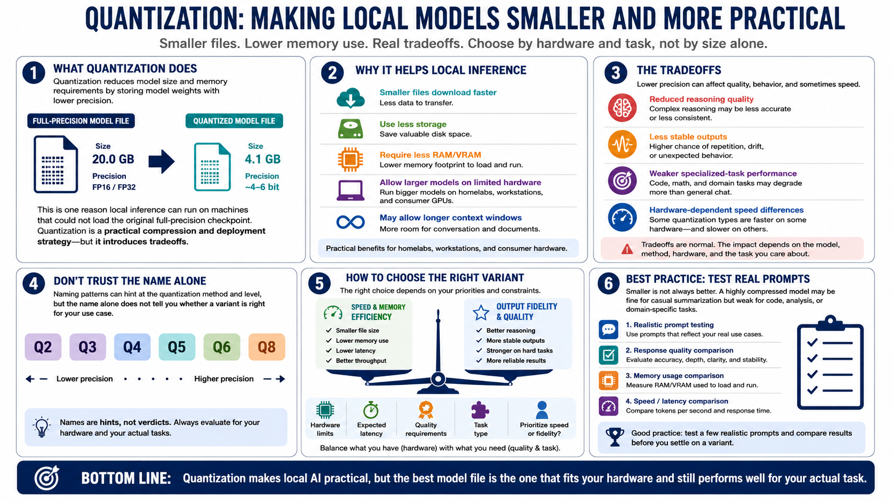

Quantization Fundamentals
Connecting to LMS... Progress: in progress

Narration
Quantization reduces model size and memory requirements by representing model weights with lower precision. Instead of storing every value with high precision, a quantized model uses a more compact representation. This is one reason local inference is possible on machines that could never load the original full-precision checkpoint. Quantization is a practical compression and deployment strategy, but it introduces tradeoffs.
The obvious benefit is file size. Smaller files are faster to download, take less storage, and require less RAM or VRAM to load. They may allow a larger model to run on limited hardware, or allow a usable model to run with a longer context window. For homelabs and workstations, quantization can be the difference between a model that only looks interesting and a model that is actually usable.
The cost is that lower precision can affect quality, behavior, and sometimes speed. Aggressive quantization may reduce reasoning quality, make outputs less stable, or hurt specialized tasks. Some quantization types are faster on certain hardware and slower on others. Naming patterns can hint at the quantization method and level, but the name alone does not tell you whether it is right for your use case.
Smaller is not always better. The right choice depends on hardware limits, expected latency, quality requirements, task type, and whether you value speed or output fidelity more. A highly compressed file may be fine for casual summarization but weak for code, analysis, or domain-specific tasks. Good practice is to test a few realistic prompts and compare results before settling on a variant.